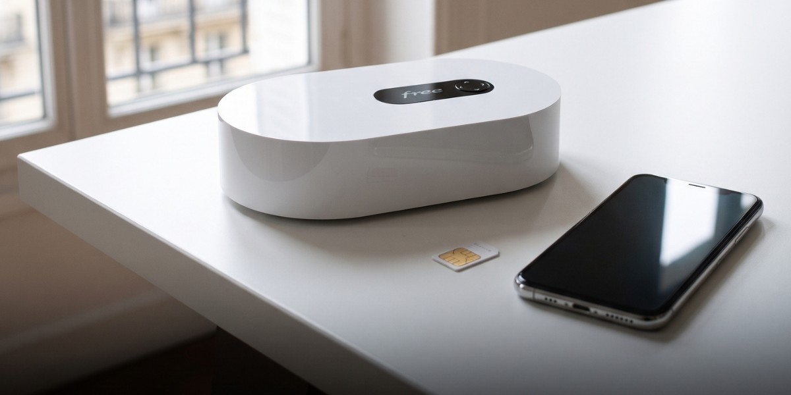

Geekotidien · Édition du 13 novembre 2026
Free absorbe Free Mobile
Free Mobile disparaît comme société indépendante le 1er décembre 2026

Free Mobile cessera d'exister comme société indépendante le 1er décembre 2026 et sera absorbée par Free. Free Réseau et Réseau Optique de France suivent le même chemin. Le projet a été officialisé le 20 octobre 2026, avec des effets comptables au 1er janvier 2026.
Pour les 15,8 millions d'abonnés, selon l'article, il n'y a pas de changement de tarifs, de contrats ni de cartes SIM. Leurs données personnelles seront transférées automatiquement à Free, sur la base de l'intérêt légitime selon l'article.
L'annonce a d'abord été faite en petits caractères sur les factures, puis enregistrée au BODACC.
Le + : Rien ne change pour les abonnés à court terme, selon l'annonce ; les données sont transférées automatiquement.